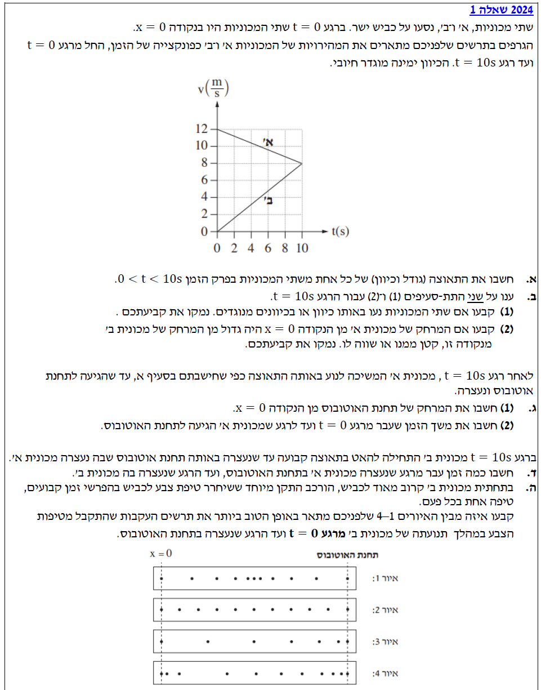

פתרון בגרות פיזיקה מכניקה 2024
שאלה 1 - קינמטיקה וגרפים
עודכן:
--.--.-- --:--:--

[תמונת השאלה המקורית]
לא נמצאה תמונה בשם question-image.png באותה תיקייה.
שלום תלמידים! 👋
שאלה זו עוסקת בתנועה בקו ישר של שני גופים (מכוניות). ננתח את תנועתם מתוך התבוננות בגרף מהירות-זמן, נחשב תאוצות, העתקים, ונקשר בין ייצוג גרפי לתנועה אמיתית בכביש. ניגש לזה צעד אחר צעד!
סעיף א': חישוב תאוצות המכוניות
1. מה נתון?
מתוך גרף המהירות-זמן (במערכת צירים שהוגדרה: הכיוון ימינה מוגדר חיובי), נחלץ נקודות עבור כל מכונית בפרק הזמן \((0 \le t \le 10\text{ s})\):
- מכונית א': מהירות התחלתית \(v_{0A} = 12\text{ m/s}\), ובזמן \(t = 10\text{ s}\) מהירותה \(v_A = 8\text{ m/s}\).
- מכונית ב': מהירות התחלתית \(v_{0B} = 0\text{ m/s}\), ובזמן \(t = 10\text{ s}\) מהירותה \(v_B = 8\text{ m/s}\).
- שתי המכוניות נעות בקו ישר (ליניארי) בגרף, ולכן יש להן תאוצה קבועה.
2. מה מחפשים?
עלינו לחשב את גודל התאוצה ואת כיוונה (הסימן שלה ביחס לציר ה- \(x\)) עבור כל אחת משתי המכוניות בפרק הזמן הנתון.
3. נוסחאות בשימוש (מדף הנוסחאות)
התאוצה הרגעית (שהיא קבועה כאן) שווה לשיפוע גרף מהירות-זמן:
\( a = \frac{dv}{dt} \Rightarrow a = \frac{\Delta v}{\Delta t} \)
4. הצבה ופתרון
עבור מכונית א':
\[ a_A = \frac{v_A - v_{0A}}{t - t_0} = \frac{8 - 12}{10 - 0} = \frac{-4}{10} = -0.4 \text{ m/s}^2 \]
הסימן השלילי מצביע על כך שכיוון התאוצה מנוגד לכיוון החיובי (כלומר, כיוונה שמאלה).
עבור מכונית ב':
\[ a_B = \frac{v_B - v_{0B}}{t - t_0} = \frac{8 - 0}{10 - 0} = \frac{8}{10} = 0.8 \text{ m/s}^2 \]
הסימן החיובי מצביע על כך שכיוון התאוצה זהה לכיוון החיובי (כלומר, כיוונה ימינה).
תשובה סופית:
מכונית א': גודל התאוצה \(0.4\text{ m/s}^2\), כיוונה שמאלה (נגד הכיוון החיובי).
מכונית ב': גודל התאוצה \(0.8\text{ m/s}^2\), כיוונה ימינה (בכיוון החיובי).
שימו לב! מהירות מכונית א' חיובית אך הולכת וקטנה, לכן כיוון תאוצתה מנוגד לכיוון תנועתה (היא "מאטה", אך בפיזיקה נקפיד לומר שגודל מהירותה קטן ולכן יש לה תאוצה המנוגדת לכיוון התנועה). מהירות מכונית ב' חיובית והולכת וגדלה, לכן תאוצתה בכיוון התנועה.
סעיף ב' (1): כיווני התנועה ברגע \(t = 10\text{ s}\)
1. מה נתון?
- אנו מסתכלים על הרגע הספציפי \(t = 10\text{ s}\).
- מתוך הגרף נקרא את ערכי המהירות ברגע זה: \(v_A(10) = 8\text{ m/s}\) ו- \(v_B(10) = 8\text{ m/s}\).
2. מה מחפשים?
לקבוע האם המכוניות נעות באותו כיוון או בכיוונים מנוגדים ברגע זה, ולנמק.
3. עיקרון פיזיקלי
כיוון התנועה נקבע בלעדית על ידי הסימן של המהירות \(v\). מהירות חיובית משמעותה תנועה בכיוון החיובי של הציר, ומהירות שלילית משמעותה תנועה נגד כיוון הציר.
4. הסבר ופתרון
ברגע \(t=10\text{ s}\), שתי המכוניות נמצאות בחלק החיובי של ציר המהירות (מעל ציר הזמן). ערך המהירות של שתיהן חיובי (\(8\text{ m/s}\)). לכן, שתיהן מתקדמות בכיוון שהוגדר כחיובי (ימינה).
תשובה סופית:
המכוניות נעות באותו כיוון. נימוק: ערך המהירות של שתיהן ברגע זה הינו חיובי, והסימן של המהירות הוא שמגדיר את כיוון התנועה.
טעות נפוצה היא לחשוב שמכיוון שגרף אחד יורד והשני עולה, המכוניות נעות בכיוונים מנוגדים. זכרו: עלייה או ירידה בגרף מהירות-זמן מעידה על *התאוצה*, לא על כיוון התנועה! כיוון התנועה הוא נטו השאלה "האם אנחנו מעל או מתחת לציר ה-t?".
סעיף ב' (2): השוואת מרחקים מהראשית
1. מה נתון?
- ברגע \(t=0\), שתי המכוניות היו בנקודה \(x_0 = 0\).
- אנו בוחנים את תנועתן עד \(t=10\text{ s}\).
2. מה מחפשים?
לקבוע מי מהמכוניות נמצאת במרחק גדול יותר מן הראשית \(x=0\) ברגע \(t=10\text{ s}\).
3. נוסחאות בשימוש (מדף הנוסחאות) / עיקרון ויזואלי
ההעתק (השינוי במקום \(\Delta x\)) שווה לשטח הכלוא מתחת לגרף מהירות-זמן. מאחר והמקום ההתחלתי הוא אפס, ההעתק שווה למקום הסופי (\(x\)).
\( \Delta x = \text{Area under } v(t) \text{ graph} \)
4. הצבה ופתרון
נחשב את השטח עבור כל מכונית מ- \(t=0\) עד \(t=10\):
\[ \Delta x_A = S_{\text{trapezoid}} = \frac{(v_{0A} + v_A) \cdot t}{2} = \frac{(12 + 8) \cdot 10}{2} = \frac{20 \cdot 10}{2} = 100 \text{ m} \]
\[ \Delta x_B = S_{\text{triangle}} = \frac{v_B \cdot t}{2} = \frac{8 \cdot 10}{2} = 40 \text{ m} \]
ניתן לראות זאת גם אינטואיטיבית: לאורך כל פרק הזמן מ- \(t=0\) ועד \(t=10\), הגרף של מכונית א' נמצא תמיד "מעל" הגרף של מכונית ב'. כלומר, בכל רגע נתון, מהירותה של מכונית א' גדולה מזו של מכונית ב' (או שווה לה בקצה), ולכן היא בהכרח עברה מרחק רב יותר.
תשובה סופית:
המרחק של מכונית א' מנקודה \(x=0\) גדול יותר מזה של מכונית ב'. נימוק: השטח הכלוא תחת הגרף של מכונית א' (100 מ') גדול מהשטח תחת הגרף של מכונית ב' (40 מ').
סעיף ג': תנועת מכונית א' עד העצירה בתחנה
1. מה נתון?
- אנו בוחנים את מכונית א' מרגע \(t=0\) ועד העצירה בתחנת האוטובוס.
- מהירות התחלתית: \(v_{0A} = 12\text{ m/s}\).
- תאוצת המכונית קבועה (מחושבת בסעיף א'): \(a_A = -0.4\text{ m/s}^2\).
- מהירות סופית בתחנה (עצירה): \(v_{end} = 0\text{ m/s}\).
- מיקום התחלתי: \(x_0 = 0\).
2. מה מחפשים?
ג(1): את המרחק של תחנת האוטובוס מן הנקודה \(x=0\) (כלומר, ההעתק \(\Delta x\) עד העצירה).
ג(2): את משך הזמן שעבר מ- \(t=0\) ועד לרגע העצירה.
3. נוסחאות בשימוש (מדף הנוסחאות)
למציאת ההעתק ללא תלות בזמן:
\( v^2 = v_0^2 + 2a(x - x_0) \)
למציאת הזמן:
\( v = v_0 + at \)
4. הצבה ופתרון
עבור ג(1) - מיקום התחנה:
\[ v_{end}^2 = v_{0A}^2 + 2a_A(x - 0) \]
\[ 0^2 = 12^2 + 2 \cdot (-0.4) \cdot x \]
\[ 0 = 144 - 0.8x \]
\[ 0.8x = 144 \quad \Rightarrow \quad x = \frac{144}{0.8} = 180 \text{ m} \]
עבור ג(2) - הזמן עד העצירה:
\[ v_{end} = v_{0A} + a_A \cdot t_{stop} \]
\[ 0 = 12 + (-0.4) \cdot t_{stop} \]
\[ 0.4 \cdot t_{stop} = 12 \quad \Rightarrow \quad t_{stop} = \frac{12}{0.4} = 30 \text{ s} \]
תשובה סופית:
(1) המרחק של תחנת האוטובוס מהראשית הוא \(180\text{ m}\).
(2) משך הזמן שעבר עד שמכונית א' הגיעה לתחנה הוא \(30\text{ s}\).
שימו לב לסדר הפעולות! בחרתי לפתור את המרחק קודם בעזרת הנוסחה שאינה כוללת זמן (המתאימה במיוחד כשמהירות סופית והתחלתית ידועות). אפשר היה גם לפתור קודם את ג(2) למציאת הזמן (\(30\text{ s}\)) ואז להציב בנוסחת מקום-זמן: \( x = x_0 + v_0 t + \frac{1}{2} a t^2 \). שתי הדרכים נכונות לחלוטין!
סעיף ד': הפרש הזמנים בהגעה לתחנה
1. מה נתון?
- מכונית ב' עוצרת באותה תחנה (במיקום \(x = 180\text{ m}\)).
- התנועה של מכונית ב' מתחלקת לשני שלבים:
- שלב ראשון (\(0 \le t \le 10\)): חישבנו בסעיף ב' שהיא עברה \(\Delta x_1 = 40\text{ m}\) והגיעה למהירות \(v_1 = 8\text{ m/s}\). הזמן לשלב זה הוא \(10\text{ s}\).
- שלב שני (\(t \ge 10\)): היא מתחילה להאט בתאוצה קבועה עד לעצירה (\(v_2 = 0\)).
- מכונית א' עצרה בתחנה בזמן כולל של \(30\text{ s}\) (מ- \(t=0\)).
2. מה מחפשים?
את הזמן שעבר מרגע שמכונית א' נעצרה, ועד הרגע שמכונית ב' נעצרה אחריה באותה תחנה. כלומר, הפרש הזמנים הכולל \(\Delta t = t_{\text{total,B}} - t_{\text{total,A}}\).
3. נוסחאות בשימוש (מדף הנוסחאות)
נשתמש בנוסחת ההעתק המבוססת על מהירות ממוצעת (כשהתאוצה קבועה):
\( \Delta x = \frac{v_0 + v}{2} \cdot \Delta t \)
4. הצבה ופתרון
ננתח את השלב השני של מכונית ב':
- המרחק שנותר לה לעבור עד התחנה: \( \Delta x_2 = 180\text{ m} - 40\text{ m} = 140\text{ m} \).
- המהירות בתחילת השלב: \(8\text{ m/s}\).
- המהירות בסוף השלב: \(0\text{ m/s}\).
נחשב את הזמן שלקח השלב השני (\(t_2\)):
\[ 140 = \frac{8 + 0}{2} \cdot t_2 \]
\[ 140 = 4 \cdot t_2 \quad \Rightarrow \quad t_2 = \frac{140}{4} = 35 \text{ s} \]
הזמן הכולל שלקח למכונית ב' להגיע לתחנה מ- \(t=0\) הוא סכום הזמנים של השלב הראשון (\(t_1\)) והשלב השני (\(t_2\)):
\[ t_{\text{total,B}} = t_1 + t_2 = 10 + 35 = 45 \text{ s} \]
מכונית א' הגיעה ב- \(30\text{ s}\). הפרש הזמנים הוא:
\[ \Delta t = t_{\text{total,B}} - t_{\text{total,A}} = 45 - 30 = 15 \text{ s} \]
תשובה סופית:
עברו \(15\text{ s}\) מהרגע בו עצרה מכונית א' בתחנה, ועד הרגע בו עצרה בה מכונית ב'.
זוהי קלאסיקה של שאלה מרובת שלבים. המפתח כאן הוא לא לנסות להכניס את כל התנועה של מכונית ב' למשוואה אחת, כיוון שהתאוצה שלה משתנה ב- \(t=10\). פירוק לשלבים (שלב א': תאוצה חיובית, שלב ב': תאוצה שלילית) עושה את החיים קלים ומונע טעויות קטלניות!
סעיף ה': תרשים עקבות טיפות צבע למכונית ב'
1. מה נתון?
- מכשיר מטפטף צבע בקצב קבוע (מרווחי זמן שווים \(\Delta t = \text{const}\)).
- אנו בוחנים את כל תנועת מכונית ב' מ- \(x=0\) ועד לעצירתה בתחנה.
2. מה מחפשים?
לבחור איזה מן האיורים (1-4) מתאר נכונה את המרווחים בין הטיפות על הכביש עבור תנועת מכונית ב', ולנמק.
3. עיקרון פיזיקלי
המרחק בין שתי טיפות עוקבות מייצג את ההעתק של המכונית בפרק זמן קבוע. מאחר ו- \(\Delta x \approx v \cdot \Delta t\), המרחק בין הטיפות פרופורציונלי לגודל המהירות של המכונית.
- כאשר המהירות גדלה \(\rightarrow\) המרחקים בין הטיפות גדלים.
- כאשר המהירות נשארת קבועה \(\rightarrow\) המרחקים נשארים שווים.
- כאשר המהירות קטנה \(\rightarrow\) המרחקים בין הטיפות קטנים (הטיפות "מצטופפות").
4. ניתוח ופתרון
נבחן את מהירות מכונית ב' לאורך המסלול:
- חלק ראשון (\(0 \le t \le 10\)): המכונית מתחילה ממנוחה ומהירותה גדלה באופן קבוע. לכן, המרווחים בין הטיפות הראשונות חייבים ללכת ולגדול.
- חלק שני (\(t \ge 10\)): המכונית מבצעת תהליך בו גודל מהירותה קטן עד לעצירה. לכן, המרווחים בין הטיפות חייבים ללכת ולקטון בחלק זה, עד שהם מצטופפים מאוד לקראת התחנה.
נפסול אפשרויות לפי הניתוח:
- איור 1: מראה מרווחים שהולכים וקטנים ואז גדלים – שגוי (המהירות שלנו לא קטנה ואז גדלה).
- איור 2: מראה מרווחים שווים לאורך כל הדרך – שגוי (המהירות משתנה).
- איור 3: מראה מרווחים שהולכים וקטנים לאורך כל הדרך – שגוי (המהירות שלנו קודם עולה).
- איור 4: מראה מרווחים שבהתחלה גדלים (גודל המהירות עולה ב-10 השניות הראשונות) ולאחר מכן הולכים וקטנים (גודל המהירות יורד עד עצירה) – זהה בדיוק לניתוח שלנו!
תשובה סופית:
איור 4 הוא המתאר נאמנה את העקבות.
נימוק: בחלקה הראשון של התנועה גודל המהירות גדל ולכן המרחקים בין טיפות עוקבות גדלים (כי \(\Delta x \approx v \cdot \Delta t\)). בחלקה השני גודל המהירות קטן לקראת עצירה, ולכן המרחקים בין הטיפות הולכים וקטנים. דפוס זה מופיע באיור 4.
שאלה מצוינת שמקשרת בין מודל מתמטי לייצוג פלסטי-ויזואלי (תרשים עקבות). תמיד דמיינו את המכונית נוסעת מול העיניים שלכם – כשהיא מתחילה נסיעה וצוברת מהירות המרווחים נפתחים, וכשהיא זוחלת לעצירה הטיפות כמעט נופלות אחת על השנייה. מעולה שזיהיתם נכון את איור 4!